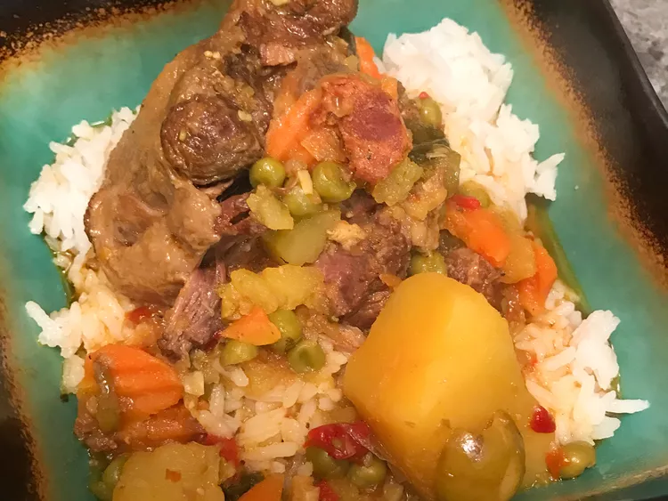

Rabo Encendido (Cuban Oxtail Stew)

Description
Oxtail stew is a ubiquitous dish that is found through the caribbean islands.
This recipe provides the Cuban variation of this delicious meal!
Ingredients
- 1 1/2 cups vino seco (white cooking wine)
- 1/4 cup olive oil
- 1 teaspoon salt
- 4 pounds beef oxtail
- 2 tablespoons olive oil, divided
- 2 potatoes, peeled and quartered
- 2 cups diced onion
- 1 cup diced carrots
- 6 cloves garlic, coarsely choppoed
- 1/2 teaspoon salt
- 1/4 cup green olives, pitted and halved
- 3 bay leaves
- 2 teaspoons Miami-style sazon seasoning
- 1/2(.18 ounce) packet sazon seasoning (such as Sa-Son Accent)
- 1/2 teaspoon allspice
- 2 (15 ounce) cans tomato sauce
- 3 cups chicken broth
Steps
- Whisk vino seco, 1/4 cup olive oil, and salt together in a large bowl. Add oxtails and mix well to coat. Cover with plastic wrap and marinate in the refrigerator for 12 hours.
- Drain oxtails, discarding all but 1/2 cup of the marinade.
- Heat 1 tablespoon olive oil in a large pot over medium-high heat and sear oxtails until browned on all sides, about 2 minutes per side. Transfer to a large plate. Heat remaining 1 tablespoon olive oil in the same pot. Saute potatoes, onion, and carrots until onions are translucent, about 5 minutes.
- Mash garlic and 1/2 teaspoon salt into a coarse paste in a mortar and pestle. Add garlic paste to the pot; stir until fragrant, about 30 seconds. Stir in green olives, bay leaves, sazon completa, sazon seasoning, and allspice. Pour in reserved marinade, tomato sauce, and chicken broth.
- Return oxtails to the pot. Bring to a boil, reduce heat, and simmer, covered, until oxtails are fork tender and falling off the bone, about 4 hours.